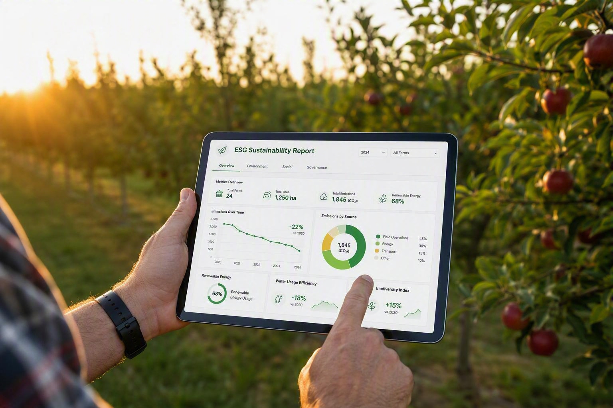

La Digitalizzazione come Leva di Trasparenza
Il passaggio da un tradizionale bilancio di sostenibilità cartaceo o in formato PDF a un sito web interattivo rappresenta un'evoluzione strategica fondamentale per la comunicazione d'impresa. Come dimostrato nel caso studio di Apofruit Italia, la sostenibilità non deve essere percepita come un mero adempimento formale, ma come una scelta identitaria che mette al centro le persone, la trasparenza e la condivisione del valore generato. Un sito web dedicato permette di tradurre la complessità tecnica e normativa (come gli standard ESRS) in un linguaggio visivo, diretto e accessibile a tutti gli stakeholder.
I Vantaggi Strategici di un Sito Web Dedicato
- Accessibilità e Navigabilità: La suddivisione delle informazioni in "card" tematiche interattive permette agli utenti di esplorare argomenti complessi—dalla mitigazione climatica alla gestione delle risorse idriche—senza dover scorrere documenti lunghi centinaia di pagine.
- Valorizzazione dei Dati Chiave: Il web design consente di mettere immediatamente in risalto le metriche di maggior impatto. Risultati come il raggiungimento del 68% di mix rinnovabile, l'azzeramento delle emissioni Scope 2 market-based o l'installazione di impianti fotovoltaici su 14 stabilimenti emergono con estrema chiarezza.
- Fruibilità Universale (Responsive Design): Un'interfaccia sviluppata in HTML5 e CSS garantisce un adattamento perfetto a qualsiasi dispositivo (desktop, tablet, smartphone), permettendo a soci, clienti e fornitori di consultare l'impegno dell'azienda in qualsiasi momento.
- Rafforzamento dell'Identità di Brand: L'utilizzo mirato della palette cromatica aziendale e di elementi visivi coerenti trasforma un documento di compliance in un potente strumento di marketing istituzionale, rafforzando la fiducia nel marchio.
Scalabilità e Adattabilità del Modello
Il passaggio da un tradizionale bilancio di sostenibilità cartaceo o in formato PDF a un sito web interattivo rappresenta un'evoluzione strategica fondamentale per la comunicazione d'impresa. Come dimostrato nel caso studio di Apofruit Italia, la sostenibilità non deve essere percepita come un mero adempimento formale, ma come una scelta identitaria che mette al centro le persone, la trasparenza e la condivisione del valore generato. Un sito web dedicato permette di tradurre la complessità tecnica e normativa (come gli standard ESRS) in un linguaggio visivo, diretto e accessibile a tutti gli stakeholder.